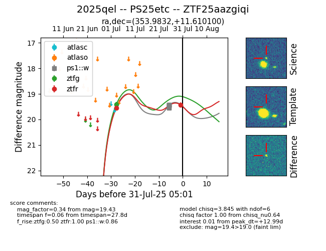

Target 2025qel at 2025-07-31 05:01, see:
FINK: fink-portal.org/2025qel
Lasair: lasair-ztf.lsst.ac.uk/objects/2025qel
ALeRCE: alerce.online/object/2025qel
TNS: wis-tns.org/object/2025qel
YSE: ziggy.ucolick.org/yse/transient_detail/2025qel
alt names
ZTF25aazgiqi (ztf,fink)
2025qel (tns,yse)
PS25etc (panstarrs)
coordinates:
equatorial (ra, dec) = (353.9832,+11.61010)
galactic (l, b) = (95.1585,-47.14917)
photometry
last ps1::w=19.43, ztfg=19.42, ztfr=19.43
8 ps1::w, 1 ztfg, 2 ztfr detections
